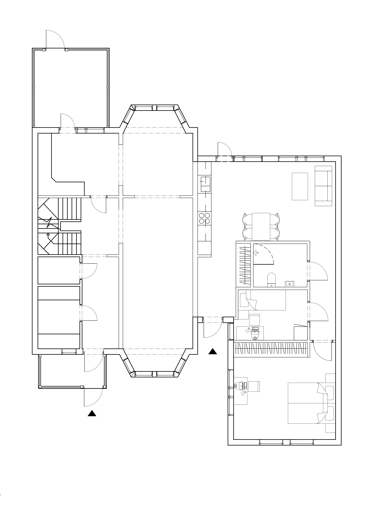
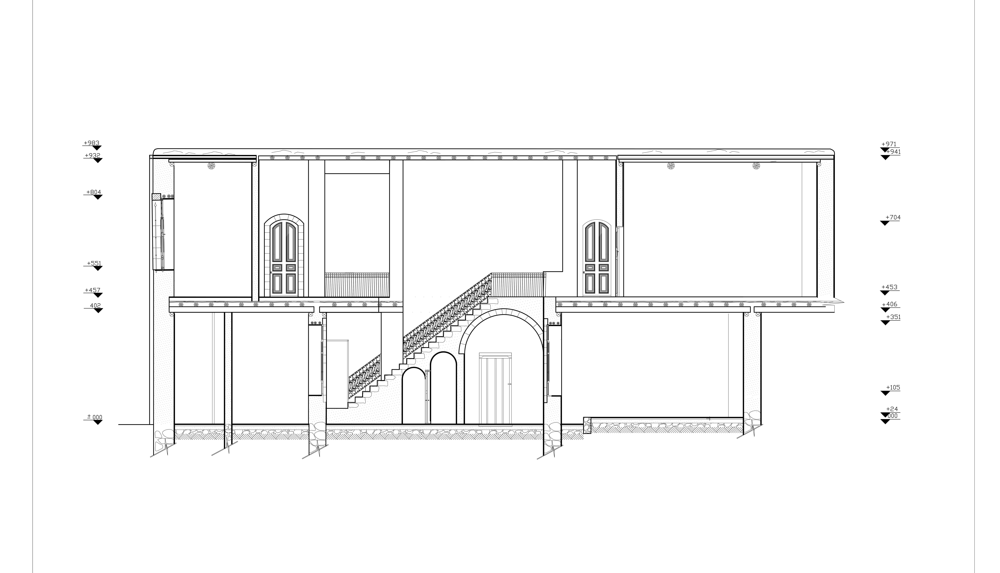

Portfolio
Gå till min Github.
Tidigare verk i arkitektur

PANORAMA URSVIK
Nybyggnation av 10 parhus & 2 villor
Bygglovshandling

LINSVÄGEN 7
Tillbyggnad av villa
Bygglovshandling

K-MÄRKT HUS DAMASKUS
Renovering av antikt hus från 1800-talet i gamla Damaskus
Bygglovshandling